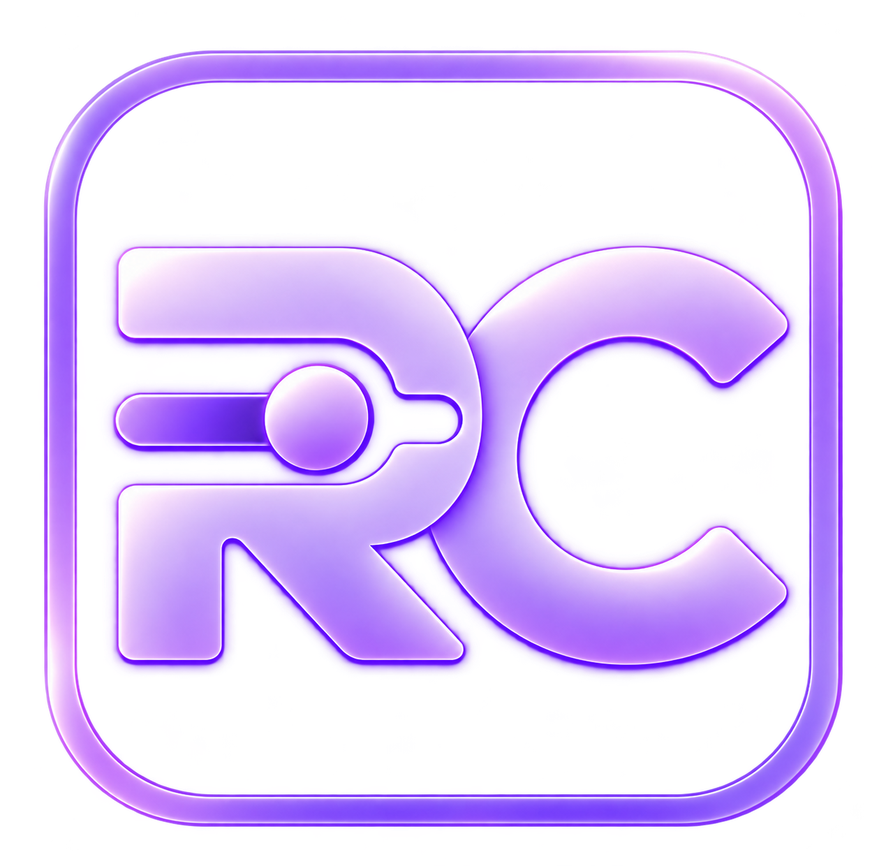

В ИГРЕ
Игровой банк
Для игроков Province. Перевод на указанный игровой счёт.
Номер счёта707793

ReConfig Provinceby Nikolskiy На главнуюReConfig Province развивается благодаря интересу сообщества. Если хочется поддержать проект — можно выбрать любой удобный способ. Это полностью добровольно.
Для игроков Province. Перевод на указанный игровой счёт.
Поддержка в USDT через Crypto Pay. Выбери сумму или укажи свою и добавь комментарий к платежу.
От 1 до 1000 USDT, до двух знаков после запятой
Будет указан в описании счёта при оплате
Удобный способ поддержать банковской картой. Доступность оплаты зависит от страны и банка.
Пользоваться программой, рассказывать о ней друзьям, делиться идеями или поставить звезду на GitHub — уже большая помощь. Спасибо!
Поддержка добровольная и не влияет на доступ к программе и её возможностям.